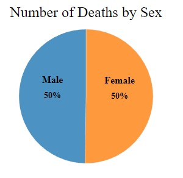

Introduction
The iconic historical map created by Dr. John Snow is regarded as a pivotal turning point in the development of epidemiology. A British doctor named Dr. John Snow developed it in 1854, when London was experiencing a cholera outbreak. At the time, cholera was a fatal illness that killed hundreds of people, and it was still unclear how it spread.
One of the first people to hypothesize that cholera was spread by tainted water was Dr. John Snow. He gathered information on the city's cholera cases and plotted them on a map to support his theory. The outbreak was then linked to the tainted water supply after he discovered a concentration of cases near the Broad Street water pump.Dr. John Snow's map had a tremendous effect on public health. It opened the way for contemporary GIS technology and showed the value of spatial analysis and data visualization in epidemiology. The map also had an impact on public policy, which helped many communities construct sanitary infrastructure and clean water sources.
About:
For H517: Visualization Design, Analysis, & Assessment, course project Ashok Varma re-created a Interactive Data visualization of the London cholera pandemic of 1854.
Objective : To use D3.js and other open source frameworks of js to create more intense interactive version of Dr. John Snow's epidemic map with the provided data below
source data - pumps, streets places where most deaths occured, and other demographic data - are provided as part of this project.
Project Details
Design:
1. Layout
Firstly I went through the project requirements and used the required datasets i.e. streets, pumps, deathdays and deathagessex files.The next part I tried to analyze the project drawn a rough graph as shown in figure above
Map,pie charts,and bar graph.i will explain each in detail beolw.
2.Visualizations
Developed a interactive map with the data points with streets, death locations, pumps which represent the distribution of deaths with the colors by the gender.
Developed the map with the street names and labels and workhouse brewery as shown in the below image.
I created a graph that displays the daily number of deaths during the epidemic period, using a time series format.It shows them data of death people on particular day required.
Created a pie chart representing number of death by sex so that we can identify individually regarding male and female deaths in the map.

Created another pie chart which clearly identifies number of death by age group.Deaths within age group of infants i.e 1-10 and > aged people with more than 80years of age and above are more when compare to other age groups and death rate between males and females is not particularly significant.
3.Findings
We can observe from the map that females are more impacted than males. The number of deaths by age group can be seen by lingering over the first pie chart. The visualization demonstrates that age groups under 10 and older than 80 are more affected by this incidence than other age groups. Third, a timeline graph that displays the dates of deaths and the total number of fatalities that happened on each date. There was a significant fatality rate between August 9 and September 10, as you can see. Moreover, the first of September saw the greatest fatality rate. I've also included pie charts so that the user may see the percentage of deaths broken down by age and sex.
4.References
www.w3schools.com/graphics/svg_intro.asp
www.w3schools.com/w3js
https://www.w3schools.com/w3css
www.toptal.com/designers/colorfilter
https://codepen.io/rstrahl/pen/yyEYBx
www.udemy.com/data-visualize-data-with-d3js-the-easy-way/learn/v4/overview
webdva.github.io/how-to-draw-a-line-in-d3js
d3js.org
D3 Documentation